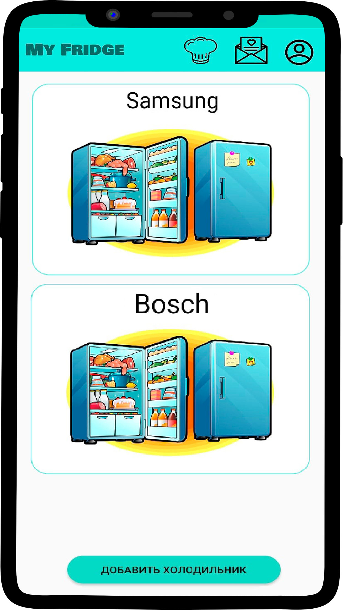

Проект «Учет продуктов»
Разработка веб-сайта и мобильного приложения для учета продуктов в своем холодильнике, с помощью
которых можно будет следить за сроком годности и количеством своих продуктов. Также предусматривается
реализация возможности общего доступа с другими пользователями приложения (например, членами семьи),
рекомендации по приготовлению блюд из имеющихся продуктов, всплывающие уведомления об окончании срока
годности продукта.